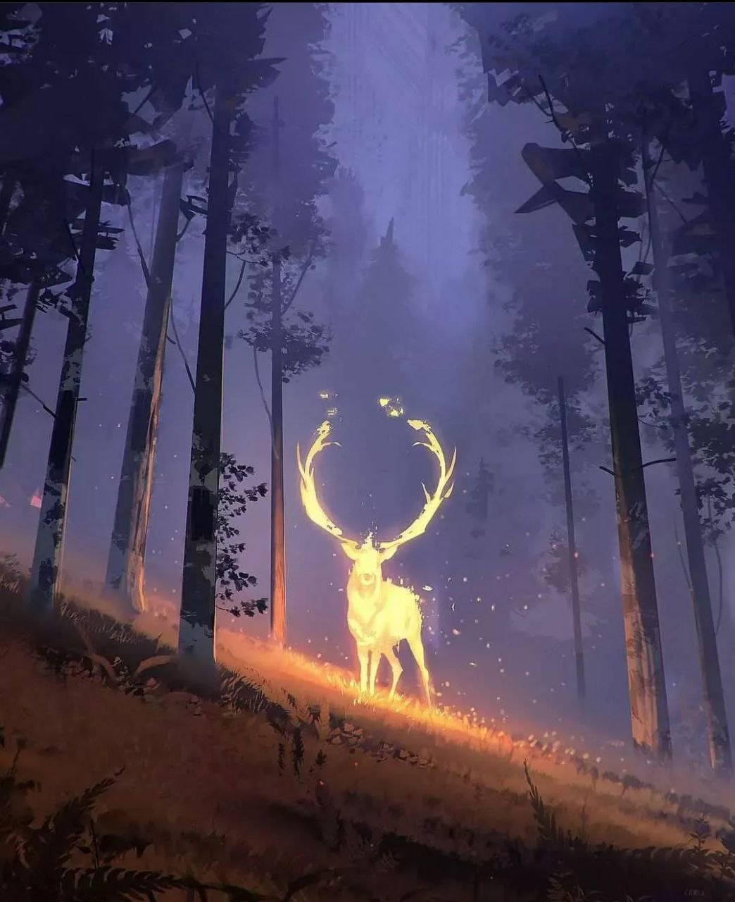

Гора — форма рельефа, изолированное резкое поднятие местности с выраженными склонами и подножием или вершина в горной стране.

Олени имеют богатое символическое значение и являются в мифах различных культур и народов. Часто олицетворяют благородство, величие, красоту, грацию, быстроту.
